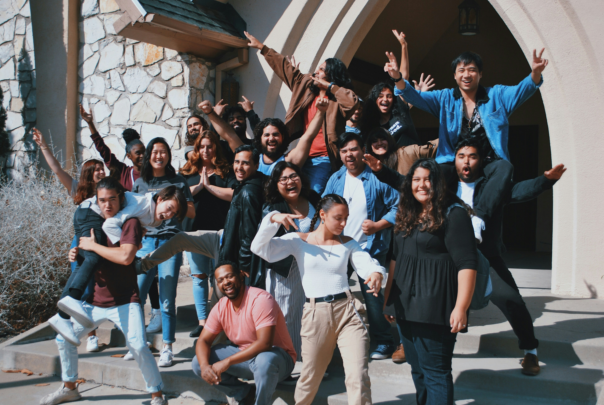
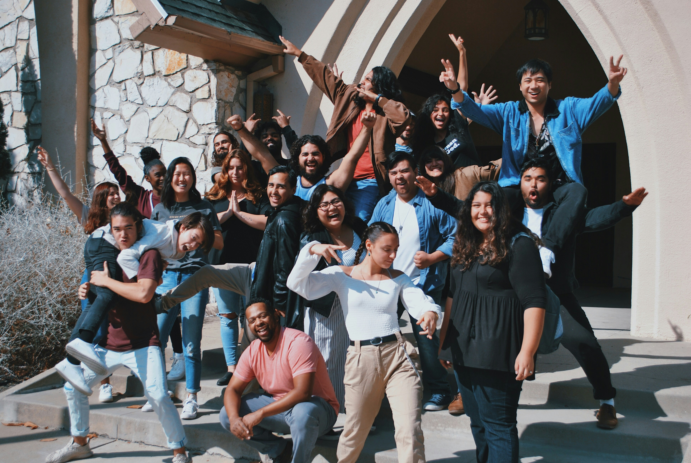
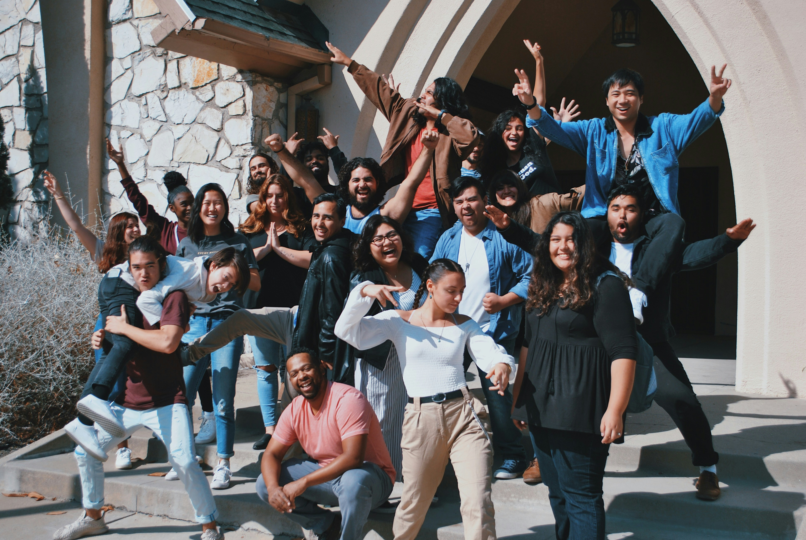

Galeria
 


Mais imagens
A Capela Santo Antônio, localizada em Rio Claro (SP), foi erguida em 1955 graças ao empenho e à devoção dos funcionários do serviço florestal da Companhia Paulista de Estradas de Ferro. Construída como um espaço de fé e comunidade, a capela tornou-se um marco histórico e espiritual da região, preservando até hoje a memória e a tradição de seus fundadores.

Confira alguns dos próximos e últimos eventos da nossa comunidade:

Data: 15 de Junho de 2025 - 18h
Venha participar da nossa tradicional Festa Junina com comidas típicas, quadrilha e muita música.

Data: 30 de Julho de 2025 - 9h às 16h
Mutirão de arrecadação de alimentos e roupas em prol das famílias carentes da comunidade.

Data: 13 de Junho de 2025 - 19h
Celebração especial em honra a Santo Antônio, com bênção dos pães e procissão.